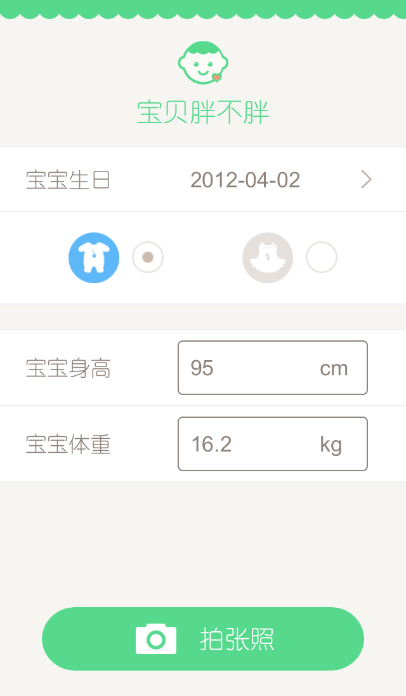
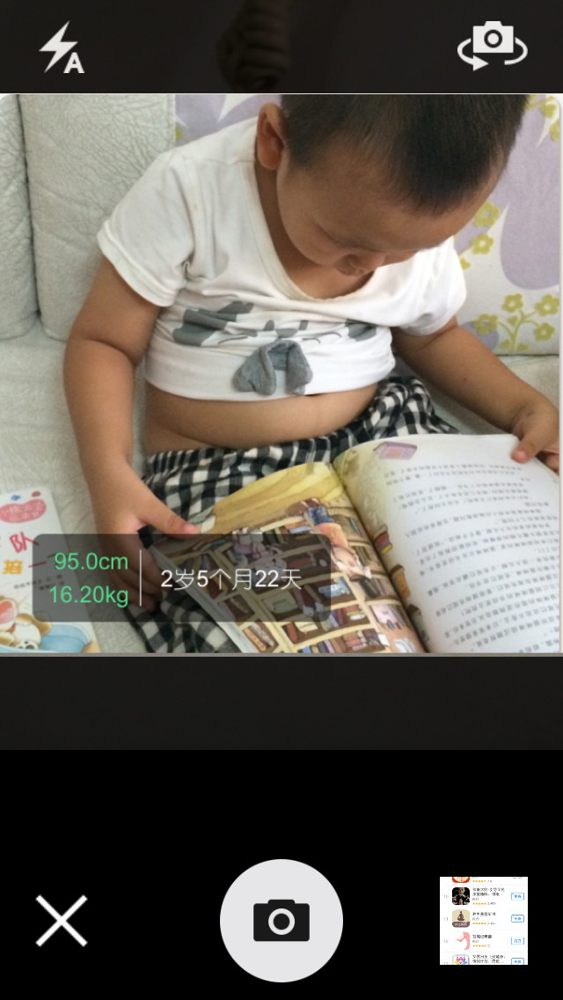
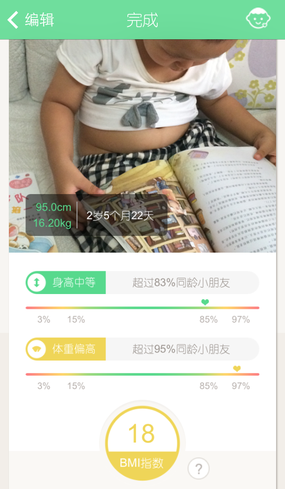
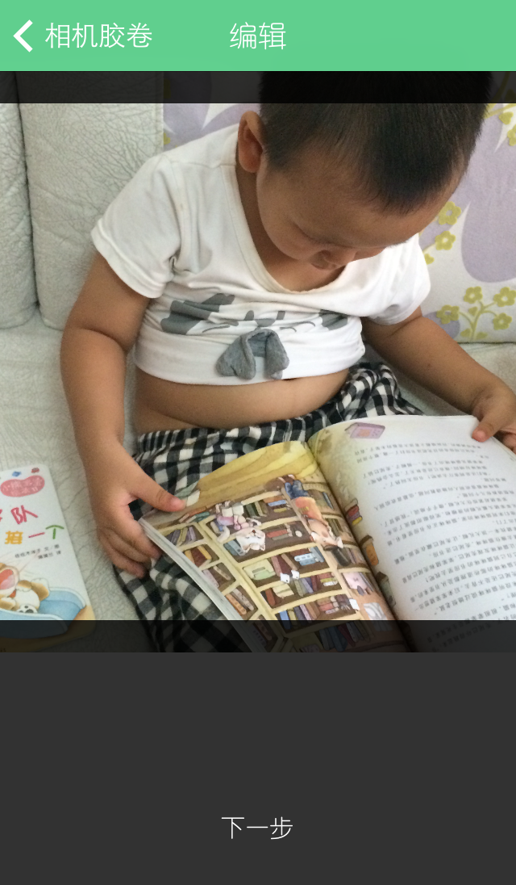

简介
您是否在宝贝跟同龄小朋友玩耍时，悄悄观察谁高谁矮、谁胖谁瘦，然后在心里默默担心自家宝贝身高过低、体型偏胖或偏瘦呢？
肉眼的观察是不准确的，本APP将为您带来一个准确的评估！
本APP适用于0-5岁的小朋友，采用世界卫生组织的研究数据，可以计算出您宝贝的身高、体重、胖瘦程度在同龄小朋友中的排名情况，进而评估宝贝的生长发育情况。
评估结果以水印形式打在照片上，便于将信息保存和分享。
妈妈们都来试试吧！
使用方法
启动后，首先输入宝贝的出生年月日、性别、身高、体重：
点击按钮“拍张照”，会进入拍照界面：
拍完之后，会显示宝贝的评估结果，包括身高、体重、BMI在同龄小朋友中的排名：
也可以从相册选择一张照片，然后进行缩放移动后，再生成最终结果：
BMI解释
BMI指数（Body Mass Index，简称体质指数），是用体重公斤数除以身高米数平方得出的数字。BMI是世卫组织建议的用以衡量成人和小孩胖瘦状况的关键指标。
对于0-5岁的儿童（本app的主要适用年龄段），他们的胖瘦状况是根据其BMI在同龄人中所处的排名来评估的。
低于3% ：过轻
3%-15% ：偏轻
15%-85%：正常
85%-97%：偏重
高于97% ：过重
隐私协议
本APP的隐私协议
联系方式
对App有任何的问题和建议，都欢迎联系作者。 huoyong119@126.com
感谢你的关注！